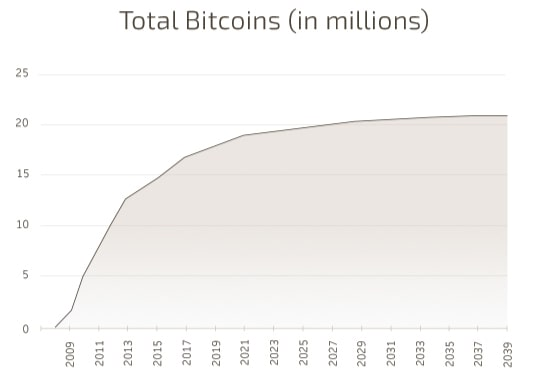
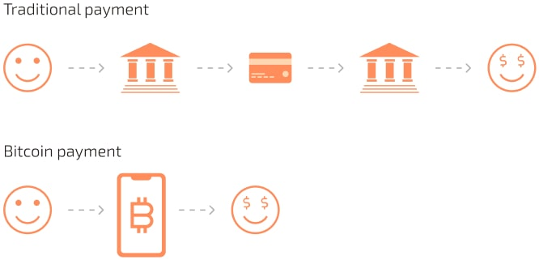
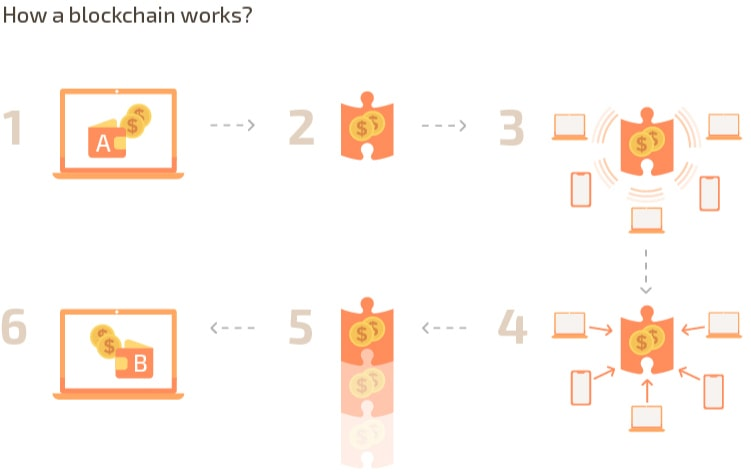
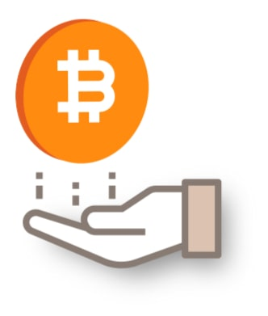

Learning Center
Understanding Bitcoin in Simple Terms
Bitcoin Simplified
Bitcoin is currently the world’s largest decentralized cryptocurrency. It is based on a public ledger or record that is maintained digitally by millions of computers around the world in a distributed scheme. This is a big departure from centralized record keeping currently being practiced by banks around the world and that is why Bitcoin is seen as a big disruptive force in the business.
The world is becoming more and more digitized with each passing moment. For some people, the current digitized economy has been progressive and helpful but for many, the current centralized system speaks of disenfranchisement and hoarding of power in financial institutions the likes of which have never been seen before.
Why Bitcoin network was ever needed?
When the financial crisis of 2008 occurred, people began to question the sustainability of the current platforms and started considering alternatives. Free trade activists and borderless economy proponents believed that a new currency was needed to have an alternative to the current financial model.
But, it was easier said than done. There were pretty serious challenges in getting a new currency out there. How to start a purely digital currency? Who is going to adopt it and why? How will new currency units be created in the future? And the most important question, who is going to control it and how?
How Bitcoin Started?
All of these questions were answered in the original Bitcoin paper published in October 2008 that laid the basis of the existence of a cryptocurrency based on blockchain technology. It was called “Bitcoin” as Bit is the basic unit of digital information and coin is a basic unit of currency.
Original Bitcoin Whitepaper by Satoshi Nakamoto (PDF)The paper from Satoshi Nakamoto gave the concept of open-source distributed holding of ledgers (records) which he called blockchain. Instead of relying on one central databank and securing it, the new approach involved computers from around the world forming a decentralized consensus network to make records immutable.
Bitcoin doesn’t have a single point of attack. Every server maintaining its record is one of the same and they constantly tally the Bitcoin record with each other. This is fundamentally how a blockchain network works. In this way, both the window of opportunity for a cyber-attack and the number of servers one needs to hack across the world makes infiltration impossible. This is why the record of who holds what amount of Bitcoin is considered the safest updatable record in existence ever.

In this case, Satoshi Nakamoto used this revolutionary new technique to make the record of a new currency he called Bitcoin and its ownership immutable. He started the network himself in 2009 and slowly more and more people read his paper, expressed interest and joined him.
How are more Bitcoins Created?
Satoshi had devised a system in which information regarding bitcoin’s ownership is kept anonymous with only the owners with the right keys able to access them. The information itself is kept in blocks that are chronologically added to the overall record in a complex cryptographic signature. More Bitcoins are created by “mining” on the blockchain which involves voluntary participants dedicating their computing power and getting transaction fees and part of the newly created blocks as rewards.
Maximum number of Bitcoins
But, Satoshi also realized that in order to increase the value of the new cryptocurrency, there needs to be a final ceiling on the maximum number of Bitcoins that can be created. Back then he put a limit of 21 million Bitcoin and that limit is never expected to be surpassed. After every four years, new Bitcoin being created are halved thus creating scarcity and driving up the prices.
Currently on November 17, 2019, the total number of Bitcoin in existence is 18,551,052. So, only 2.5 million Bitcoin are left to mine. Currently, 12.5 Bitcoins are being created after almost every 15 minutes. By May 2020, this number will be reduced by half to 6.25 Bitcoins.
Bitcoin is currently the world’s largest decentralized cryptocurrency. It is based on a public ledger or record that is maintained digitally by millions of computers around the world in a distributed scheme.
This is a big departure from centralized record keeping currently being practiced by banks around the world and that is why Bitcoin is seen as a big disruptive force in the business.
How can one own Bitcoin and Pay with it?
Anyone can own Bitcoin and no organization controls its transactions. To hold Bitcoin, one needs a digital wallet. A wallet is a software that is developed using open-source Bitcoin code to send and receive money Peer-to-Peer (P2P) with no intermediary involved.
Every wallet has one or several public addresses that are basically anonymous bank account numbers. One can send Bitcoin to it and once received, can send it to other people as well. There are several third party apps and wallets that provide added functionalities with wallets like QR codes for online payment and so on. One can also change the wallet public address whenever he/she likes and the Bitcoins owned are immediately transferred there.

Why Bitcoin is Viable for the world?
Bitcoin is a digital currency that is borderless and universally accessible. With latest wallets one doesn’t even need an internet connection to make transfers. Even just an SMS service would do. This is a revolutionary change in currency matters as today’s banking system relies too much on digital databanks and so-called secure networks when they have all been shown to be prone to hacking.
Today’s banking system is also heavily restricted by governments around the world and it affects the economy overall. Free trade and borderless transactions are necessary to ensure a sustainable economy that works for all.
With Bitcoin’s global borderless transactions, free trade can at last occur with no hiccups and thus limit the ability of governments to affect it in any way. Add to it the immutable nature of the blockchain technology and low transaction fees, Bitcoin is surely going to play a big part in the world economics in the future. It is already being recognized and adopted by big companies and governments around the world too as it is only beginning to understand its great potential and limitless applications.
Bitcoin and Blockchain Revolution
Revolution Bitcoin’s emergence started the blockchain and coin revolution around the world. Because the code proposed by Satoshi Nakamoto was open-source, different new projects arose from it. They include new cryptocurrency projects including programmable Ethereum blockchain, various smaller cryptocurrencies, Coin offerings and eventually enterprise blockchain solutions like IBM’s Hyperledger and R3’s Corda.
Blockchain as a Technological Innovation
Nowadays Blockchain is often seen as the next big tech innovation in the world and all tech companies are heavily investing in it. The total market capitalization in hundreds of billions of dollars and is expected to grow substantially in the near future as Bitcoin becomes more and more mainstream.
The blockchain technology is a decentralized, digital, and public ledger for all sorts of cryptocurrency transactions. It is good to note that blockchain is a register that keeps track of records of digital currency transactions without third parties such as banks or government institutions. The blockchain keeps on growing as new records of transactions join the chain in a chronological manner. Also, Blockchain technology uses distributed consensus algorithms and cryptography techniques in the creation of Bitcoin and other altcoins such as Bitcoin, Ethereum, Litecoin, ripple, among others.
When you go to a bank to get a transaction done, you observe that the banker records the transaction for both the sender and the receiver (double ledger accounting). A separate ledger is maintained to keep track of all the transactions that are made daily.
The main problem of maintaining this kind of ledger is that it can be easily manipulated. To overcome this problem and to eradicate the corruption caused due to it, an electronic computer-computer transaction algorithm was made. This algorithm was called Blockchain.
A Blockchain is similar to a ledger, but it's electronic. The best part of it is that every transaction that is recorded is publicly accessible and available on all the computers all around the world. Everyone can see it, but no one can edit it (append only). It makes it practically impossible to manipulate the data.
There has never been a counterfeit bitcoin produced successfully through the Blockchain. Furthermore, each block in the blockchain contains the information about the previous block. This makes it possible to trace any transaction and any bitcoin all the way to their origination. This level of security and transparency had never been possible before.
- Lisa wants to send Bitcoin to Bob
- This transaction goes into a “block” to be validated and recorded
- The block with transactions is sent for approval to every computer on the Bitcoin network
- The network participants (miners and nodes) approve the transaction as valid
- The “block” is then added to the chain of records (prevous blocks) permanently
- Bob received Bitcoin from Lisa.
Is Bitcoin Money?
There is no consensus on the complete legal status of Bitcoin because of its unique nature of the cryptocurrency. Many countries around the world don’t even have a crypto-specific policy and mostly use broad-ranged monetary regulation to crack down when they want against cryptocurrency users when they have to. There is however, a consensus among all of the current governments that Bitcoin is not a legal tender as it is not issued by a central bank. So, while cryptocurrency can be many things, legally it is not local currency.
While it is not money, there is no clear conception of its identity. Some governments consider it as an investment asset, others consider as a security and still others completely ban it and label it as an illegal/rogue currency that challenges their sovereignty. But, in practical terms money and assets are not different if there is universal access, transactional capability and concrete exchange rate accepted by all. Assets can be used to buy amenities, products and other purchasable items even if the process is not universally adopted. But, depending on the time and place, cryptocurrencies can be legal and illegal to use or even store.
There is no consensus on the complete legal status of Bitcoin because of its unique nature of the cryptocurrency. Many countries around the world don’t even have a crypto-specific policy and mostly use broad-ranged monetary regulation to crack down when they want against cryptocurrency users when they have to. There is however, a consensus among all of the current governments that Bitcoin is not a legal tender as it is not issued by a central bank. So, while cryptocurrency can be many things, legally it is not local currency.
While it is not money, there is no clear conception of its identity. Some governments consider it as an investment asset, others consider as a security and still others completely ban it and label it as an illegal/rogue currency that challenges their sovereignty. But, in practical terms money and assets are not different if there is universal access, transactional capability and concrete exchange rate accepted by all. Assets can be used to buy amenities, products and other purchasable items even if the process is not universally adopted. But, depending on the time and place, cryptocurrencies can be legal and illegal to use or even store.
Bitcoin Regulation in North America

Some regulators have designated Bitcoin as a Security like stocks and bonds regulated by FINRA and some regulators treat Bitcoin as a Commodity such as the Chicago Board of Trade (CBOE). In the US, there is federal jurisdiction over the matter as well as a certain level of state jurisdiction as well.
However, the US has one of the most complex and often conflicting regulations concerning Bitcoin. The Treasury defines it as a decentralized virtual currency, the IRS considers it property and the Commodities and Futures Commission (CFTC) considers it as a commodity. While Bitcoin is categorized in various ways around the US, it is not legal and possessing it is not a crime. However, there are some restrictions in reporting your income and assets to the authorities for tax-related purposes.
Similarly, countries around the world are regulating cryptocurrencies differently. In Canada for example, Bitcoin is legal and users must register with Financial Transactions and Reports Analysis Centre of Canada (Fintrac), but banking channels are not allowed to engage in bitcoin-related transactions in some areas. The Bank of Montreal for example doesn’t allow bitcoin related transactions. Over in Mexico, Bitcoin possession is legal and there is a lot of ambiguity regarding their operations through banks.
Bitcoin Regulation in European Union

In the United Kingdom, Bitcoin is currently unregulated and is considered as foreign currency even for VAT/GST tax calculations. In the European Union, there is no Bitcoin related ban in place but banks have been cautioned against engaging in bitcoin-related transactions.
Bitcoin Regulation in Asia and Australia

In much of Asia, Bitcoin is considered legal to hold but banks are banned from transactions related to it. The only exceptions are Japan, Australia, South Korea, Singapore and Hong Kong. In India, Bitcoin is expected to be legalized soon but currently has a lengthy blanket ban.
For a full list of latest legality-related inquiries, please visit this extensive list of legality of Bitcoin on wikipedia.com.
How does Blockchain validate the owner?
As the blockchain is completely open-source and any person can check the transactions on the network. The question is how blockchain validates the owner of the Bitcoins? The answer lies in the encryption technology which is used by the Blockchain to save and validate the owners. The whole system depends on two keys.
- Private Key
- Public Key
Private Key
The Private Key is the private password which is your ONLY way to access your bitcoins. If you somehow lose access to these Private keys, you will lose your bitcoins and there is no other way to access them.
Public Key
Public Key is the users’ address on the blockchain. Basically, it is randomly generated a long string of numbers and the bitcoin transactions are recorded using these Public Keys.

Your Bitcoin wallet address consists of a pair of keys which are linked to each other. Public Key is easy to determine from the Private Key, but getting the Private Key from the Public Key is impossible*.
When Alice sends Bitcoin to Bob, she includes her Public Key, Bitcoin amount, and destination address and signs it with her Private Key (Encrypt). This signature is unique to that specific transaction based on its contents. This transaction cannot be faked without an attacker knowing Alice’s Private Key.
Transaction then gets sent to the network to get verified where the signature and Alice’s Public Key is matched with transaction (Decrypt). After network is done verifying the transaction it gets added to Bitcoin Blockchain/ledger and Bob gets Bitcoin in his wallet. *Guessing the Private Key is possible but infeasible. Take a look at the diagram below

What are different parts of the Bitcoin network?
The Bitcoin network essentially consists of two main entities:
- Miners
- Nodes
Miners

Let's talk about miners first. Miners are the stakeholders of the bitcoin network who dedicate their computing resources to help make the transactions secure. They help solve cryptographic calculations around transactions. The process is called mining and in reward for dedicating their resources in this power-hungry process, miners are granted compensation.
It is a complex process and it has two main purposes:
- Confirming transactions and security
- Creating new Bitcoins
The compensation for miners is in two forms:
- Block reward
- Transaction fees

Block rewards are the new bitcoins being created by the mining process. It is set at around 12.5 btc every 20 minutes or so. It means that currently, almost every 30 minutes 12.5 Bitcoins are created and shared between miners who have successfully been in the process and dedicated their resources.
The new Bitcoins are immediately updated on the blockchain and their ownership is passed down to the miners. However, after every four years, the block reward is halved thus creating increased difficulty for the miners and thus creating a planned shortage of new Bitcoin being created which in return increases the value of already existing Bitcoins in existence.
This is a complete departure to the current financial model in which more and more money is being printed every year and the overall ceiling is being increased at an astronomical rate.
Mining Pools
Since individual mining can be difficult, miners usually partner with each other and create groups called mining pools for collective mining which increases rewards probability. These big mining pools control a lot of the Bitcoin hash rate and thus can be extremely powerful in decision making.
For example, the Bitcoin cash fork of 2017 was a big event that was in part orchestrated by the powerful mining groups who wanted alternative bitcoin chains and new airdropped reserves.
How many miners are there?
Anyone can connect to the bitcoin network and become a miner and the returns depend on the hardware possessed by each miner that is supposed to do calculations as fast as it can. The faster one’s system is the more bitcoins it can potentially earn as a miner as the bitcoin network is designed to increased competition as more and more miners become involved in the process.
During Bitcoin’s initial days a bitcoin was worth less than $5 and people could mine it in their homes with their cheap graphics processing units and cards. Ten years later, there are hundreds of thousands of miners around the world, many of them operate specially designed bitcoin mining hardware called ASIC chips. Mining also consumes a lot of electricity and is only considered profitable if there is access to a cheap electricity generation facility nearby like a dam.
Miners are very important in the bitcoin network as they add security and layers of encryption to the network. They are a reason why bitcoin network is called the most powerful computing entity in the world. They also hold a lot of power within the community as part of larger groups called mining pools. The exact number of miners varies from time to time as many go offline once their profitability index takes a hit but there are hundreds of thousands of remote miners around the world and it has become quite a competitive industry.
Nodes

Nodes make up the fabric of the blockchain itself. Instead of relying on a centralized server to store information regarding the ownership of every satoshi (Bitcoin’s smallest unit), a decentralized network of nodes is used by the system.
A node is simply any dedicated computer that has the open-source program of the bitcoin network running on it. It can view all the latest transactions and verify them. Operating a node doesn’t have a direct monetary benefit but most stakeholders and observers need nodes to see what is actually happening in the decentralized network.
Achieving Decentralized Consensus
While miners secure the transactions, nodes are used to make the blockchain ledger immutable. How it works is that the decentralized protocol allows each individual node to randomly communicate with nodes around the world to tally the latest record of the Bitcoin ledger i.e. who owns what amount of Bitcoin.
Since the communication is random, any node that chooses to transmit illicit information regarding the ledger is immediately identified and blacklisted by the network.
How can Bitcoin be theoretically hacked?
To hack a transaction and thus theoretically alter the record of the ownership of bitcoin, a 51% attack is needed. It can only occur if a computing entity can achieve 51% of the total mining hash rate dedicated to the system which is getting close to impossible given the sheer numbers being controlled by the network right now.
With a compromised mining process, the network of nodes can be theoretically manipulated to give disputing transactional records which will disrupt the fairness of the ledger.
What is Hashrate?

The process of mining depends on the hardware capability of each individual unit. The sum of all hardware hash rate mining on the network at any given point and time is called the total hash rate of the bitcoin network or simply the Bitcoin hash rate.
Hashing is a process in computer science that takes an input variable of one length and gives an output of the same length every time it is run. In easier terms, it is a specific function that is work intensive meaning actual calculations need to be made in order to process the function and be involved in the mining process. Since the type of calculations are specific, the hardware needs to be measured not in Hertz like normal computing but in the ability to do these specific types of transactions as fast as possible. This classification gives us a new unit used in bitcoin mining called hash.
The total amount of Bitcoin power dedicated to the network is represented by hashes per second or H/s. The hash rate is usually expressed in prefixes like Mega Hash per second (MH/s), Terra hash per second (TH/s), Peta Hash per second (PH/s) and Exa Hash per second (EH/s).
1 EH/s is 1,000,000,000,000,000,000 H/s. This makes it one of the most powerful networks in the world, something modern supercomputers cannot even come near.
On October 2019, the hash rate grew to as much as 100 EH/s at one point, beating all previous records. However, the sky's the limit to the eventual hash rate of the network.
What will become of the miners once the block reward gets too small? Will miners exist at all?

The good news is that the miners will still exist and instead of relying on block rewards, they will have to do with transaction fees only. So, once the block rewards get smaller, a free market-based survival of the bitcoin mining industry will begin who can survive on transaction fees. Initially it is expected that transaction fees will increase because miners would need a bigger part of their earnings from the transaction side of things to remain profitable. However, eventually the system will be brought to equilibrium.
Since the change is not sudden, one can expect both the network and the miners to be largely prepared for each block halving. The last block is slated to be mined in 2140.
Working of a Bitcoin Wallet and its Anonymity
Bitcoin is a P2P currency means it can be transferred from one place to another digitally without the need of a third-party guarantee like a bank and money transfer outlets. How it achieves to do that is the use of bitcoin wallets.
Bitcoin wallets are software that can be downloaded from third parties or made from scratch by users themselves. It has a public address, kind of like an account number on which bitcoin can be sent directly from one bitcoin holder to another directly. Once the transfer is complete, the wallet gets confirmation from the bitcoin network and the money belongs to the receiver. It is a safe irreversible transaction with actual value transfer rather than relying on a debt-based system like regular money transfer. The wallet and its address are public; the owner of the wallet is anonymous.
Wallets are revolutionary innovations of the cryptocurrency world as they give back control of the money from banks to the people. Now one is in charge and control of its own money.
How to Store Bitcoins?
As a Bitcoin owner, you will have several Private keys that you can’t remember and you will store these keys in the Bitcoin Wallet. There are different types of wallets available out there and each type has its own pros and cons.
Web Wallet
Web Wallets, sometimes referred to as HOT wallets are the online wallets that you can access via browser. Web Wallets store your private keys in third-party servers and these wallets offer great accessibility as you can access them anywhere in the world. However, web wallets are also prone to cyber-attacks and you could lose your private keys if someone gets access to third-party servers.

Mobile Wallets
Mobile Wallets are basically the mobile application that you can install on your smartphone. Mobile wallets are less complicated and more convenient to use. Mobile wallets store the keys on the smartphone so if you lose access to your smartphone, you will lose your private keys. Make sure you follow the private key backup procedure very carefully when using Mobile Wallets.

Desktop Wallets
Desktop Wallets are the computer application that you can install on your computer. These wallets are more secured as compared to web or mobile wallets but if your computer is compromised then you will lose access to your private keys. Backup your Private Key per wallet instructions!

Hardware Wallets
Hardware wallets also known as COLD wallets are the physical wallets that provide the ultimate security. Hardware wallets also come with some additional security features which make them more secure and ideal for storing private keys. However, if you lose access to Hardware wallets, you will lose your private keys. There is also a specific backup procedure for the Private Keys stored in the hardware wallet.

Bitcoin and Taxes

USA
After a certain number of dollar transactions as set by the state or the processor a 1099k is generated and sent to both the user and the IRS at year end for tax purposes.
The 1099-K does Not show any profits or losses, just total gross amount of all transactions in the reporting period. Bitcoinalley sends a 1099-K when the user exceeds $20,000 USD in gross transactions or 200 transactions in the calendar year.
Form 1099-K, also called Payment Card and Third Party Network Transactions, is used by credit card companies and third-party processors like PayPal and Amazon to report the payment transactions they process for retailers or other third parties.
What is an IRS form 1099-K?
After a certain number of dollar transactions as set by the state or the processor a 1099k is generated and sent to both the user and the IRS at year end for tax purposes.
The 1099-K does Not show any profits or losses, just total gross amount of all transactions in the reporting period. Bitcoinalley sends a 1099-K when the user exceeds $20,000 USD in gross transactions or 200 transactions in the calendar year.
Form 1099-K, also called Payment Card and Third Party Network Transactions, is used by credit card companies and third-party processors like PayPal and Amazon to report the payment transactions they process for retailers or other third parties.